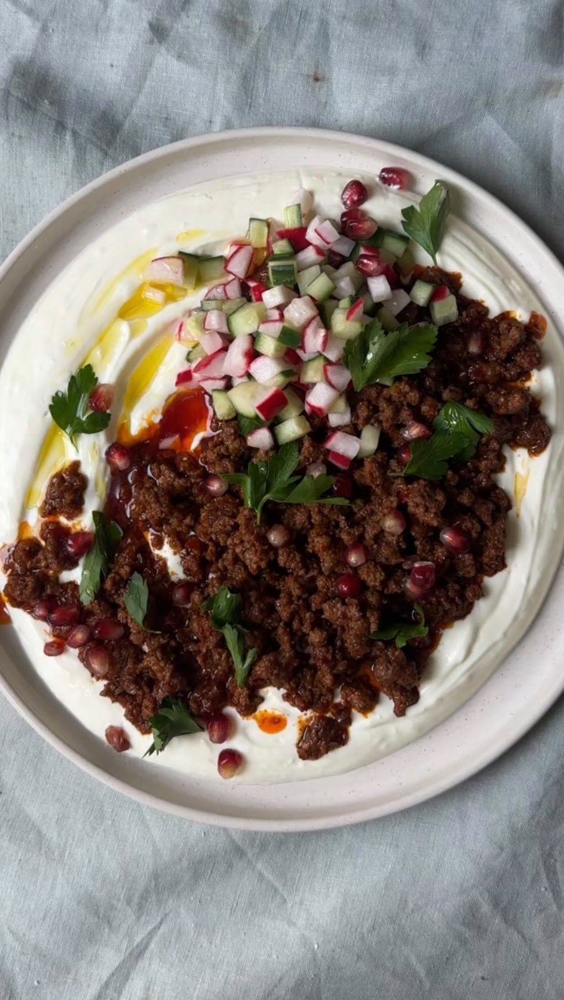

Harissa Beef Mince with Garlicky Yoghurt
Harissa beef mince served over garlicky lemon yoghurt with quick-pickled radish and cucumber.

Ingredients
Beef
Yoghurt
Pickled veg
To serve
Method
- Cube the handful of radishes and ¼ cucumber, and add to a container with the 3 tbsp white wine vinegar, a pinch of salt and a pinch of sugar. Top up with water until just covered. Mix well and set aside.
- Grate the 1 garlic clove into a bowl with the juice of ½ lemon and a pinch of salt. Add the 3 tbsp Greek yoghurt, mix well, and set aside.
- Fry the 1 shallot, diced in olive oil for a few minutes, then add the 3 garlic cloves, 1 tsp tomato purée and 2 tsp harissa paste. Cook for a minute, then add the 500g beef mince. Break it up and cook until you get some crispy bits.
- Spread the yoghurt on a plate, top with the beef mince and pickled veg, then scatter over the pomegranate seeds and parsley. Finish with a drizzle of olive oil and serve with warm flatbreads.
Notes
No serving size or timings were given in the source, so total time above is an estimate.